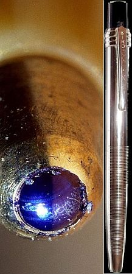

Arra, hogy hogyan is ötlötte ki a golyóstoll elvét, többféle történet is napvilágot látott.
Egy olasz folyóirat a következőket közölte hasábjain: egyszer Bíró egy budapesti teraszon üldögélt, és nézte az előtte golyózó gyermekeket. Az egyik golyó átszelt egy aszfalton összegyűlt kis víztócsát, és tovább gurulva nedves nyomot hagyott maga után az útburkolaton. Ebben a pillanatban született meg a golyóstoll ötlete.
Egy újabb történet szerint találmányához az ötletet az adta, hogy egyszer az asztala lapján felborult a tintásüveg, s a kifolyt tintába guruló apró acélgolyócskák nyomot rajzoltak maguk után.
Bárhogy is történt, az 1931. évi Budapesti Nemzetközi Vásáron bemutatta egy nagyméretű golyóval ellátott ládaszignáló tollát. Ezzel nagyon rossz minőségben, és nagy méretben lehetett csak írni. A későbbiekben ezt a megoldást tökéletesítette, s lekicsinyített változatát már írótollként alkalmazta. Ennek működési elve a következő volt:
Egy vékony cső aljára elhelyezett egy sima felületű acélgolyót, melynek majdnem tökéletesen kellett illeszkednie a cső falához. A golyó fölé a csőbe tintát, később speciális festéket öntött. Ahogy a tollat végighúzták a papíron, a golyó elfordult, s tintát szívott magával a felső részről, melyet aztán a golyó a papírra préselt.